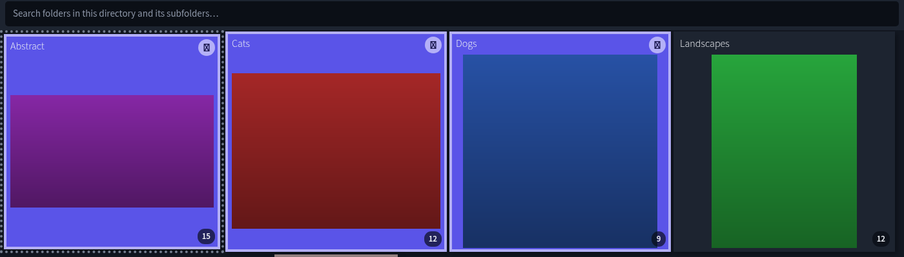
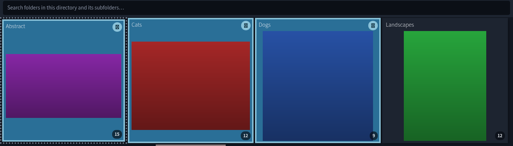
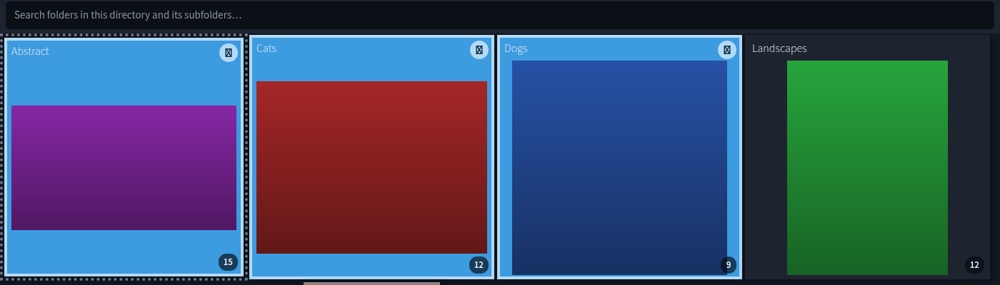
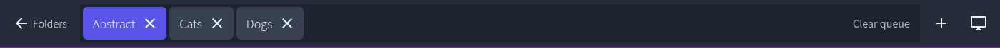
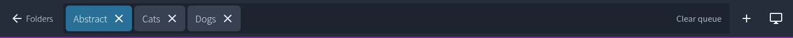
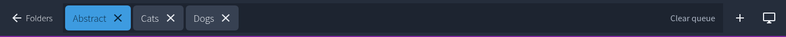

Captured from the real Electron app running the fake-filesystem fixtures,
driven by Playwright. Each pair is the same view in the same state
— only the intent-accent-* ramp differs.
Why a full ramp and not one hex: the selected tile paints
bg-intent-accent-solid, its outline paints
outline-intent-accent-content, and the check badge is
bg-intent-accent-content over
text-intent-accent-surface. Overriding only
--color-intent-accent-solid would leave a violet badge on a
cyan tile.
The check glyph renders as a box in these shots. That is the sandbox: exactly one font here (D050000L) carries U+2713. On Windows it is a real ✓. The badge's shape and colour are accurate.
Tile fill, 4px inset outline, and the top-right check badge. Fixture folders are colour-coded by a locked decision (Abstract=purple, Cats=red, Dogs=blue, Landscapes=green), so this view deliberately puts the selection colour next to four different image hues at once.
accent
#5A54E8 blue-violet
@charcuterie/tokens, daylight/dark



One of the two sites b8d84ae actually edited. The active tab
sits directly above the image being viewed.


